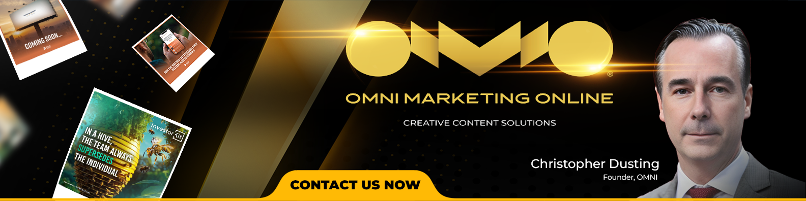

Lead journey rebuild
A practical build for teams that need cleaner capture, segmentation, follow-up and pipeline visibility.
- CRM systems
- Lead nurture systems
- Customer journey optimisation
Omni focuses on the work that makes growth easier to operate: stronger offers, clearer campaigns, healthier CRM journeys and conversion systems with reporting built in.
The work can start with strategy, a funnel sprint, CRM clean-up, content direction or a campaign build. The aim stays consistent: create a journey that captures, nurtures and converts with less friction.

A practical build for teams that need cleaner capture, segmentation, follow-up and pipeline visibility.

A campaign path that connects positioning, registrations, reminders, content follow-up and sales handoff.
A team-based content and acquisition model for audience growth, messaging and lead generation.
A focused sprint across landing pages, copy, conversion points, tracking and KPI reporting.